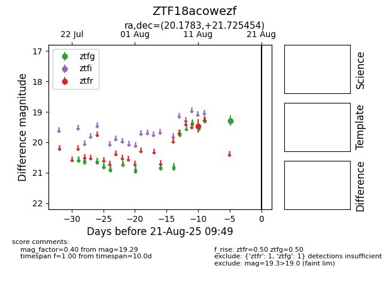

Target ZTF18acowezf at 2025-08-21 09:49, see:
FINK: fink-portal.org/ZTF18acowezf
Lasair: lasair-ztf.lsst.ac.uk/objects/ZTF18acowezf
ALeRCE: alerce.online/object/ZTF18acowezf
alt names
ZTF18acowezf (ztf,alerce)
coordinates:
equatorial (ra, dec) = (20.1783,+21.72545)
galactic (l, b) = (131.9036,-40.63576)
photometry
last ztfg=19.29, ztfr=19.46
1 ztfg, 1 ztfr detections
